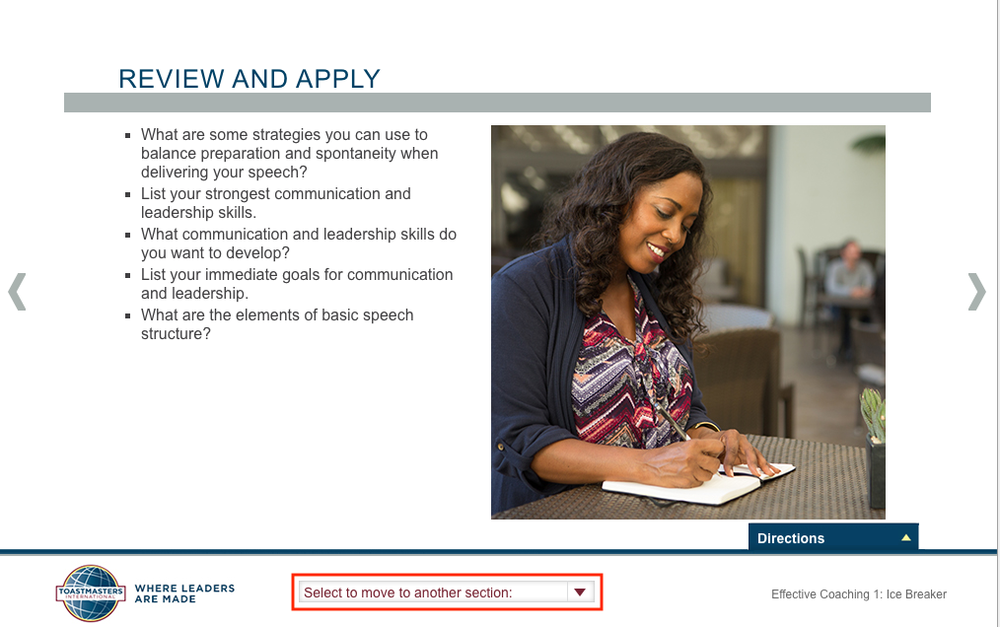

Completing a Project
“Yes! I did it.” You've completed your ice breaker and got the written evaluation from your evaluator besides the oral evaluation at the meeting.
But when you log into your Toastmasters International account and go to your Pathway curriculum, you can’t see the checkmark on the right top corner of your project. It doesn’t show the completion of the project. What should you do? Ask your evaluator or your VP of Education?
You don’t need to ask anyone. Here is what you need to do to get the checkmark that symbolizes your completion.
Open your curriculum and find your project. Click Launch. You will be on the instruction page of the project.
Locate the Select to move to another section: at the bottom of the instruction page.

Click the arrow beside Select to move to another section:, and you will see the menu that can direct you to different pages.
You need to get two things done if you haven’t done so.
First, complete the “Assess Your Skills—Before”:

- Click the arrow beside Select to move to another section:.
- Click Assess Your Skills—Before.
- Answer each question by clicking the number from 1 to 5.
- Click Submit after finishing all questions.
Second, complete the “Assess Your Skills—After”:

- Click the arrow beside Select to move to another section:.
- Click Assess Your Skills—After.
- Answer each question by clicking the number from 1 to 5.
- Click Submit after finishing all questions.
After finishing the two assessments, you should see the checkmark at the top right corner.

Now, you’re good to go to your next project. Remember to do the same after you complete your next project.